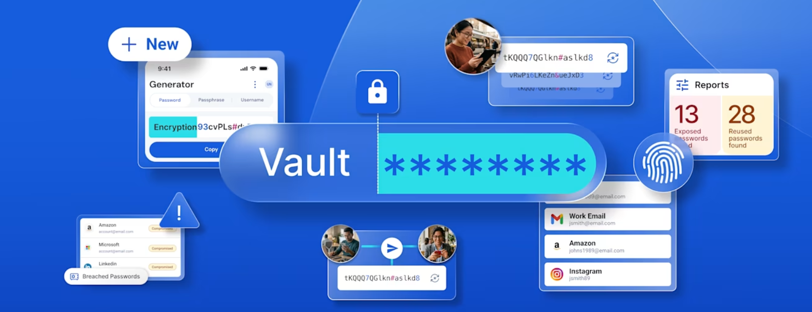

Quand un site se fait pirater, les mots de passe volés sont essayés partout ailleurs. Si vous utilisez le même pour vos emails, votre banque et Facebook, un seul piratage suffit à tout ouvrir.
Un mot de passe différent par site
C'est la règle la plus importante. Impossible à retenir de tête ? C'est justement le rôle d'un gestionnaire de mots de passe.
Le gestionnaire de mots de passe
Un gestionnaire comme Bitwarden (gratuit) retient tous vos mots de passe dans un coffre chiffré et les remplit à votre place sur l'ordinateur et le téléphone. Vous n'avez plus qu'un seul mot de passe à retenir : celui du coffre.
La phrase de passe
Pour ce mot de passe principal, choisissez une phrase de plusieurs mots sans lien entre eux, par exemple quatre mots du quotidien avec un chiffre. C'est plus long, donc plus solide, et plus facile à retenir qu'une suite de caractères compliqués.
La double authentification
- Activez-la en priorité sur votre messagerie : c'est elle qui permet de réinitialiser tous vos autres comptes.
- Puis sur la banque, Facebook, WhatsApp et les sites d'achat.
- Le code reçu par SMS ou dans une application ne se donne jamais à personne.
Vérifier si vos adresses ont fuité
Le site haveibeenpwned.com indique si votre adresse email apparaît dans une fuite de données connue. Si c'est le cas, changez le mot de passe du compte concerné.
Je peux vous accompagner
J'installe le gestionnaire sur votre ordinateur et votre téléphone, j'active la double authentification et je vous montre comment vous en servir. Voir la page cybersécurité.
Un doute sur votre ordinateur ?
Intervention à domicile à Lannilis, Lesneven, Le Folgoët, Plouguerneau et dans tout le Pays des Abers. 30 €/h, déplacement inclus.